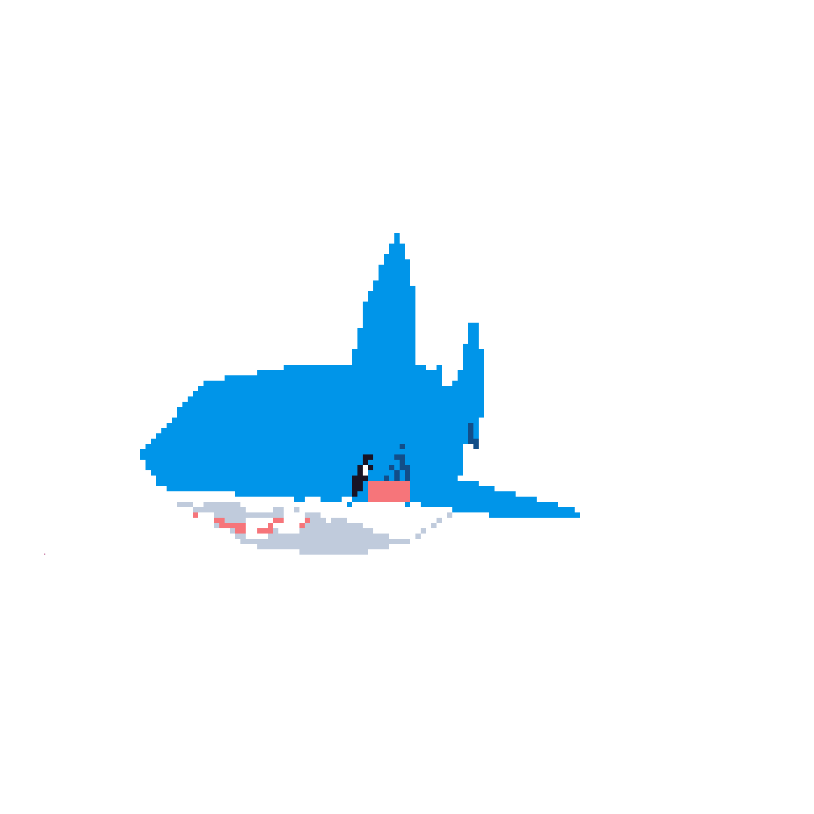

Welcome, I am
Daan Denkers
I'm a student for software developer
I study at ROC Nijmegen at the technovium building

About Me
Hello! I'm a software student, I started coding when I was 9 years old with C# but I just started to use HTML and CSS
More About Me
I like to code but the design aspect of software is something I want to improve on. I normely just start out coding and see where it takes me.
Frontend programming
Here are some of my projects I've worked / things I did on recently for websites.
First Period
All of my first period project for frontend was made in my webiste
classes. We
used html and css. I never made a website so this was all new for me.
Out of the two
FRONTEND and BACKEND that frontend is a bit easier. I think that is because it
infolves a lot more design that logic.
Backend programming
Here are some of my projects I've worked / things I did on recently for my programming classes.
First Period
I have some backend expariens bevore I went to study at ROC. When I was 9 I started with some small unity project. with this I leurend some C#. I stopt unity when there was a post about you needing to pay for the new versions. In my programing lessen we use Java this is very close to C# so it was not hard to leurn. In the first period we learned the basics of programing like what a varible is, but I arleady knew this so the first period was a bit boring. so I made some project in those lessens.
Second Period
The second period was boring we dind't do a lot. We just made Mastermind better but most of the things we needed to do to make it better I already had. So I started to learn C++. My goal is to make a 2d game engin. What I main by this is just the basics. So no physics engin just yet.